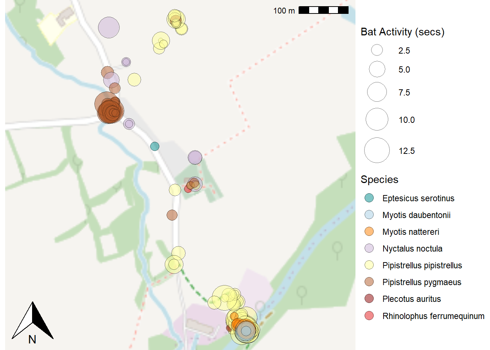
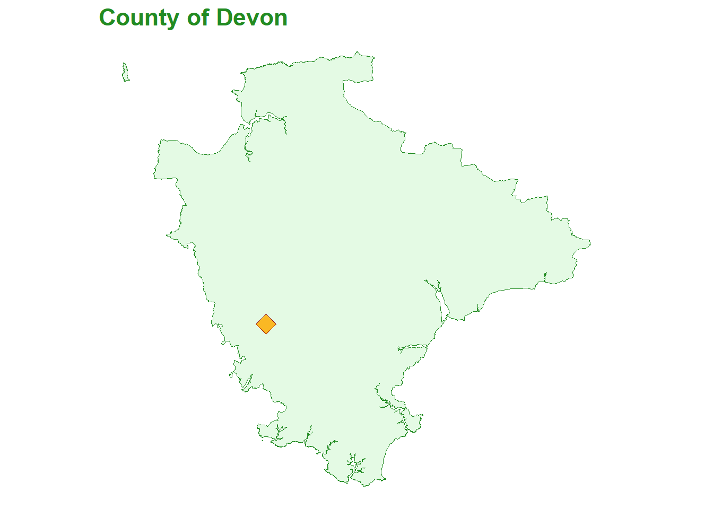
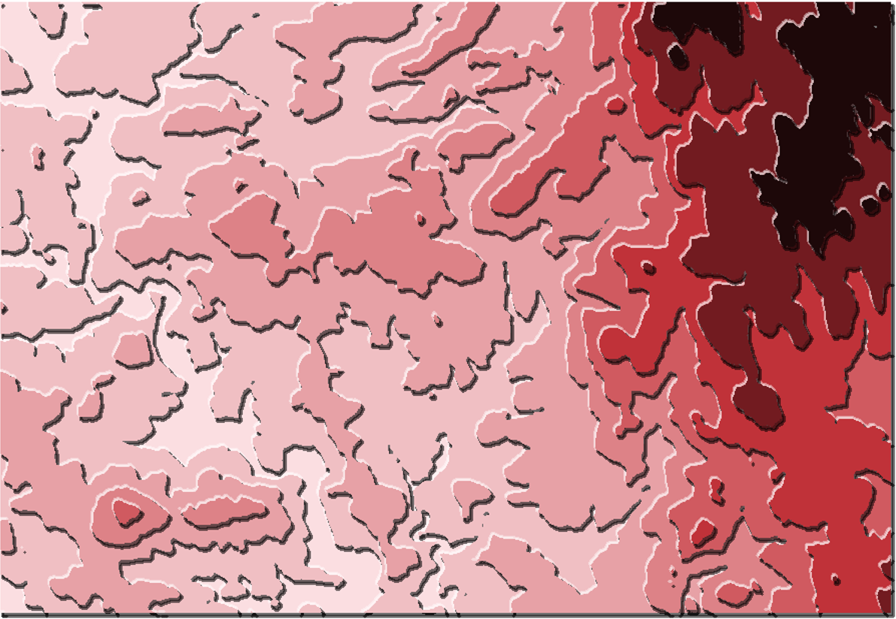

OpenStreetMap1 is a map of the world, created by the online community and free to use under an open license. Figure 1 shows a map2 of bat observations during the Lydford transect.
Figure 1: Open Street Map of Bat Activity on the Lydford Transect
1.1 GPX File
Bat detectors e.g. the Batlogger M3 contain a built in Global Positioning System (GPS) capable of recording the location over time to a GPX file; note for the Battlogger M the tracker needs to be enabled. The GPX, or GPS Exchange Format, is a text file designed as a common GPS data format for software applications. It can be used to describe waypoints, tracks, and routes. The file format is open and free to use.
The transect route, and other information such as the start and finish times, is a key part of reporting. An example of transect output created from a GPX file recorded for a National Bat Monitoring Programme (NBMP)4 field survey is given in Figure 2.
Figure 2: National Bat Monitoring Programme Field Survey Transect
The NBMP field survey transect shown in Figure 2 took 54 minutes; began at 21:52:27 hrs and finished at 22:46:56 hrs.
1.2 Relative Bat Activity
Figure 3 and Figure 4 show the relative species activity on a transect in Mary Tavy, Devon during June 2019. The map is the MaryTavy data as exported from the BatExplorer sound analysis software; it is made tidy before producing Figure 3. In Figure 4 the species are faceted onto individual maps; perhaps enhancing the understanding of the bat relative activity.
Show the code
library(tidyverse)library(sf)library(ggspatial)library(iBats)################################################################################ MaryTavy is data directly exported from BatExplorer and requires tidying!####################################################################################### Combine the two Species columns into one ################################### Select Species column and remove (Species2nd & Species3rd)data1 <- MaryTavy %>%select(-`Species 2nd Text`) %>%rename(Species =`Species Text`)# Select Species2nd column and remove (Species & Species3rd)data2 <- MaryTavy %>%select(-`Species Text`) %>%filter(`Species 2nd Text`!="-") %>%# Remove blank rowsrename(Species =`Species 2nd Text`) # Rename column# Add the datasets together into oneMaryTavyTidying <- dplyr::bind_rows(data1, data2)#################################################################################### Calculate bat activity time and prepare to make spatial data #############spatial_data <- MaryTavyTidying %>%mutate(calls =`Calls [#]`,duration =`Mean Call Lenght [ms]`,span =`Mean Call Distance [ms]`,# Calculate BatActivityTime in secondsbat_time = calls * (duration + span) /1000) %>%select(Species, bat_time, latitude =`Latitude [WGS84]`, longitude =`Longitude [WGS84]`)# default colour values used by scale_fill_manual() - scientific names - UK bats onlygraph_bat_colours <- iBats::bat_colours_default(spatial_data$Species)spatial_data <-st_as_sf(spatial_data, coords =c("longitude", "latitude"), crs =4326)plotmap <-ggplot() +annotation_map_tile(type ="osm", zoomin =-2, alpha =0.7) +geom_sf(data = spatial_data, aes(fill = Species, size = bat_time), shape =21, alpha =0.5) +fixed_plot_aspect(ratio =1) +coord_sf() +scale_fill_manual(values = graph_bat_colours) +scale_size_area(max_size =12) +labs(size ="Bat Activity (secs)",fill ="Species") +theme_void() +theme(legend.position ="right",axis.title.y =element_blank(),axis.title.x =element_blank(),axis.text.x =element_blank(),axis.text.y =element_blank(),axis.ticks =element_blank()) +#Make the point size larger on the legend to show the colourguides(fill =guide_legend(override.aes =list(size=4)))plotmap +annotation_scale(location ="tr") +annotation_north_arrow(location ="bl", which_north ="true")

Figure 3: Bat Activity on the Mary Tavy Transect as Time Present
Figure 4: Faceted Bat Activity on the Mary Tavy Transect as Time Present
2 Outline Maps
Outline maps are useful base maps; as they are not cluttered by distracting information.
2.1 Office for National Statistics
Outline maps are available from the Office for National Statistics5. Digital boundary products and reference maps are supplied under the Open Government Licence and should include copyright statements when the maps are reproduced6.
library(sf)library(tidyverse)library(iBats)# Make location point for Mary Tavy TransectMaryTavyLoc <- MaryTavy %>%summarise(lat =median(`Latitude [WGS84]`),lon =median(`Longitude [WGS84]`)) %>%st_as_sf(coords =c("lon", "lat")) %>%st_set_crs(4326) %>%# Convert coord reference system to British National Gridst_transform(crs =27700)# Load outline mapGB <- sf::st_read("maps/GeneralGB/CTYUA_Dec_2017_GCB_GB.shp", quiet =TRUE) # Plot map and Locationggplot() +geom_sf(data = GB,linewidth =0.25,colour ="#fab824",fill ="#FFEFD5") +geom_sf(data = MaryTavyLoc,shape =23,size =3,colour ="#00558e",fill ="#8B0000") +theme_void()
Figure 5: Location of the Mary Tavy Transect June 2019
Show the code
library(sf)library(tidyverse)library(iBats)# Make location point for Mary Tavy TransectMaryTavyLoc <- MaryTavy %>%summarise(lat =median(`Latitude [WGS84]`),lon =median(`Longitude [WGS84]`)) %>%st_as_sf(coords =c("lon", "lat")) %>%st_set_crs(4326) %>%# Convert coord reference system to British National Gridst_transform(crs =27700)# Load outline map and filter for Devon GB <- sf::st_read("maps/GeneralGB/CTYUA_Dec_2017_GCB_GB.shp", quiet =TRUE) %>%filter(ctyua17nm =="Devon")# Save map and Location in Devon <-ggplot() +geom_sf(data = GB,linewidth =0.25,colour ="#228b22",fill ="#E4FAE4") +geom_sf(data = MaryTavyLoc,shape =23,size =5,colour ="#8B0000",fill ="#fab824") +labs(title ="County of Devon") +theme_void() +theme(title =element_text(colour ="#228b22", size =14, face ="bold"))# Plot map and LocationDevon

Figure 6: Location within Devon of the Mary Tavy Transect June 2019
2.2 Open Street Map data
The R package osmdata downloads feature data from OpenStreetMap (OSM) 7. A list of the available features can be found in the OSM wiki. Figure 7 shows the river feature abstracted fromosmdata and displayed on the outline map of Devon from Figure 6. Figure 8 shows the water features (river, ditch, drain, and stream) for West Devon together with the location of the example data in the iBats package.
Show the code
library(tidyverse)library(osmdata)library(sf)#Obtain the River feature from `osmdata` for the Devon areariver <-opq(bbox =c(-4.3, 50.2, -3.2, 51.3)) %>%add_osm_feature(key ="waterway", value ="river") %>%osmdata_sf()Devon +geom_sf(data = river$osm_lines,inherit.aes =FALSE,color ="blue",size = .2,alpha = .5) +labs(title ="Rivers of Devon") +theme(title =element_text(colour ="blue", size =14, face ="bold"))
Figure 9: Location of Mary Tavy on a World Map (Gall Peters Projection)
3 Three Dimensional Maps
Together with latitude and longitude itâs often useful to plot a third dimension such as elevation (other variables could be rainfall, temperature). If elevation data is not immediately to hand, the elevatr R package9 provides access to elevation data from various sources. The code below has a bounding box with co-ordinates of the minimum and maximum latitude and longitude around West Devon, this passed to a tibble (data.frame).
The Base R function plot()can plot raster objects as shown in Figure 10 (a). The tanaka R package applies a shaded contour lines method which can improve the portrayal of topography on a map. The tanaka function requires the elevation data into a SpatRaster class of object; this can be done using the rast() function from terra package. The Tanaka contour map is shown in Figure 10 (b).
# With the terra package make a raster filelibrary(terra)elev_raster <-rast(elev_data)library(tanaka)tanaka(elev_raster, legend.pos ="n")
(a) Base R

(b) tanaka
Figure 10: West Devon Topography
3.1ggplot
Tanaka contours can be plotted using ggplot2, through the metR package and the function geom_contour_tanaka(). This gives more flexiabilty in output and easily allows the plotting of additional information. Figure 11 shows the topographical location of the West Devon example data in the iBats package.
Show the code
library(tidyverse)library(elevatr)library(iBats)library(metR)library(ggrepel)library(raster)elev_data <-get_elev_raster(locations =data.frame(x =c(-4.35, -3.95), y =c(50.49, 50.665)),z =10,prj ="EPSG:4326",clip ="locations")# Convert raster to data framegg_data <- raster::as.data.frame(elev_data, xy =TRUE) %>%rename(elev =names(elev_data), lat = y, lon = x)# Obtain central location of each example datasetLoc_TavyOak <- TavyOak %>%summarise(lat =median(Latitude, na.rm = T),lon =median(Longitude, na.rm = T) ) %>%mutate(DataSet ="TavyOak")Loc_MaryTavy <- MaryTavy %>%summarise(lat =median(`Latitude [WGS84]`, na.rm = T),lon =median(`Longitude [WGS84]`, na.rm = T) ) %>%mutate(DataSet ="MaryTavy")Loc_Lydford <- Lydford %>%summarise(lat =median(Latitude, na.rm = T),lon =median(Longitude, na.rm = T) ) %>%mutate(DataSet ="Lydford")Location_datasets <-bind_rows(Loc_TavyOak, Loc_MaryTavy, Loc_Lydford)ggplot(gg_data, aes(x = lon, y = lat)) +geom_contour_fill(aes(z = elev, fill =after_stat(level))) +geom_contour_tanaka(aes(z = elev)) +scale_fill_discretised(low ="#FBDEE1", high ="#1D0809") +geom_point(data = Location_datasets,aes(x = lon, y = lat),shape =25,fill ="darkred",colour ="gold",size =6 ) +geom_label_repel(data = Location_datasets, aes(x = lon, y = lat, label = DataSet), segment.size =0.2,segment.color ="grey50",direction ="both",hjust =0,size =4,alpha =0.9 ) +labs(fill ="Elevation\n(meters)") +scale_x_longitude() +scale_y_latitude() +theme_void()
Figure 11: Topographical Location of iBats Example Data in West Devon